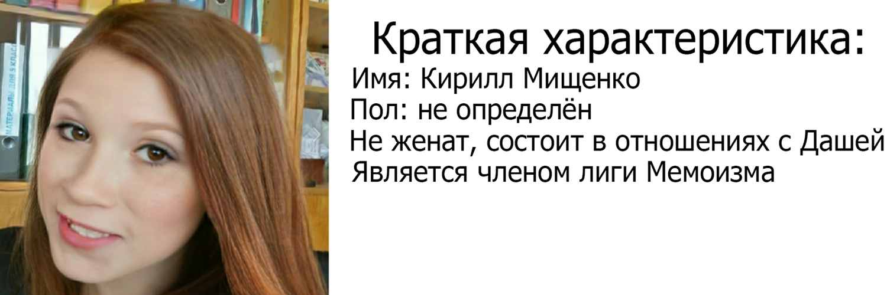

Секретные материалы

Глава 1 Минас Тирит
Пиппин выглянул из-под плаща Гэндальфа. Он никак не мог понять, во сне или наяву свистит в ушах черный ночной ветер, медленно плывет зубчатая тень гор далеко справа, во сне или наяву качается у него над головой звездное небо. Он пытался вспомнить, что с ним и где он, но мысли путались, отдельные картины сменяли друг друга.
Помнится, они мчались без остановок, летели все вперед и вперед, и там, впереди, вставал на рассвете золотистый мягкий блеск, и был город, затопленный тишиной, и гулкая пустота большого дворца на холме. Они ворвались под его своды в тот самый момент, когда вверху пронеслась огромная крылатая тень, и ужас выбелил лица людей вокруг. Пиппин вспомнил, как и его сердце сжала ледяная рука. Но рядом был Гэндальф, и ужас ушел, осталась только усталость. Пиппин спал, но сон был тревожным, в нем ходили и разговаривали незнакомые люди, что-то приказывал Гэндальф. И дальше, без перехода, снова бешеная скачка сквозь ночь. С тех пор как он заглянул в Палантир, прошло двое, нет, трое суток. Палантир! Это было ужасно! С этим воспоминанием он проснулся окончательно. Вокруг шумел и бормотал все тот же ветер.